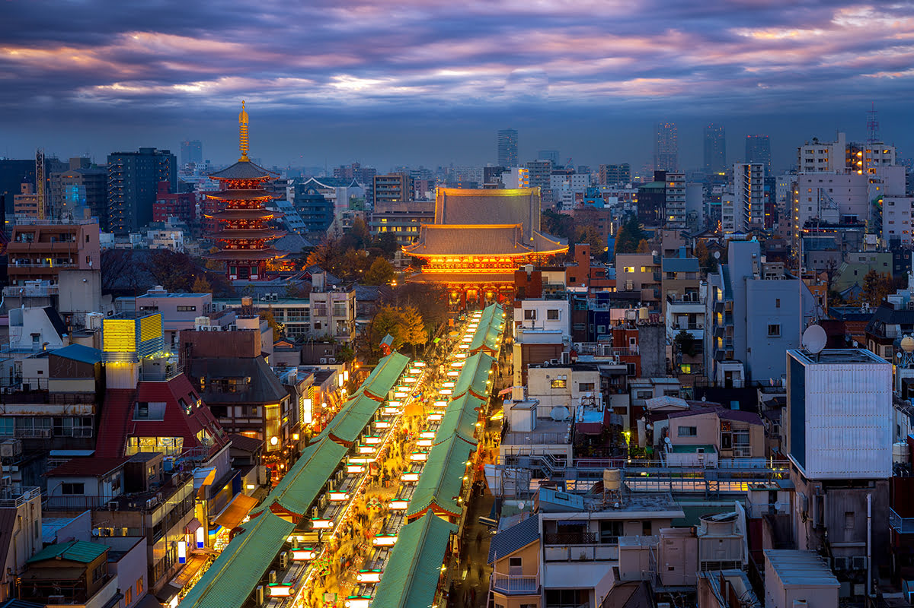

Asakusa
Asakusa
- # Temple
- # Shrine
- # History
센소지 절
浅草寺628년에 창건된 도내에서 제일 오래된 사원. 커다란 등이 걸려있는 정문 '가미나리몬'으로 유명하다. 세츠분카이, 4만 6천일(꽈리시장), 하고이타시장 등 많은 행사가 개최된다.
아사쿠사 나카미세 상점가
浅草仲見世商店街가미나리몬에서 호조몬까지 이어지는 약 250m 거리에는 에도시대부터 이어지는 약 90개의 상점이 늘어서 있다. 그 당시 당내에서 노역이 부가된 사람들에게 참배 길에서의 영업이 허용된 것에서부터 시작되었다고 한다.

아사쿠사 연예홀
浅草演芸ホール에도시대 초기에 안라쿠 안사쿠덴이란 사람이 무사들에게 재미난 이야기를 해주었던 것에서 시작된 일본의 독자적인 예능 라쿠고를 비롯한 만재, 만담, 곡예, 흉내내기 등 다양한 종류의 예능을 즐길 수 있는 대중 연예장.
Shibuya
Shibuya
- # Shopping
- # Fashion
- # Drinking
- # Dinning
시부야 스크램블 교차로
渋谷駅前 スクランブル交差点도쿄에서 가장 유명한 장소 중의 하나로, 전 세계에서 가장 사람의 왕래가 잦은 교차로로 알려져 있다. 사방에서 걸어오는 사람들이 교차하며, 혼잡하면서도 서로 부딪히지 않고 걸어간다. 교차로에서 이어진 시부야 센터가는 젊은이들에게 인기가 많아 최신 가게나 레스토랑, 클럽 등이 모여 있다.
SHIBUYA109
SHIBUYA109 渋谷店시부야를 상징하는 패션빌딩. 10대, 20대 여성을 중심으로 절대적인 인기를 얻고 있는 유행 아이템이 다채롭게 모여있다. 정기적으로 리뉴얼을 실시하여 공용 구역까지 즐길 수 있는 설레임 가득한 시설이다.
시부야 스크램블 스퀘어
渋谷スクランブルスクエア시부야 지구에서 가장 높은 약 230m, 지상47층 높이를 자랑하는 대규모 복합시설 '시부야 스크램블 스퀘어'가 2019년 11월 개장. 총 200개 이상의 숍&레스토랑을 비롯해 비즈니스 커뮤니티 시설 'SHIBUYA QWS(시부야 큐즈)'와, 오피스, 전망 시설 'SHIBUYA SKY(시부야 스카이)'로 구성되어 있다.

Shinjuku
Shinjuku
- # CulturalHub
- # CityVibes
- # Entertain
- # NeonLights
도쿄도청
東京都庁도쿄도청은 일본을 대표하는 건축가 단게 겐조(丹下健三)가 설계한 도내 굴지의 랜드마크다. 지상 45층의 전망실에서 훌륭한 경치를 관람할 수 있다. 제1본 청사 1층에는 도쿄 관광 정보 센터가 설치되어 있다.
가부키초
歌舞伎町'24시간 잠들지 않는 거리'라 불리는 신주쿠에서도 가장 활기 넘치는 번화가. 음식점, 바, 극장, 영화관, 게임센터, 노래방 등 오락시설이 밀집되어 있다.
신주쿠 골든가
新宿ゴールデン街세계2차대전의 혼란기에 탄생한 술집 골목. 지금도 좁은 골목 사이로 소소한 술집들이 모여있다. 1950년대의 모습을 간직한 가게, 젊은 점주가 참신한 컨셉으로 오픈한 가게 등 점포 수는 300개에 이른다.